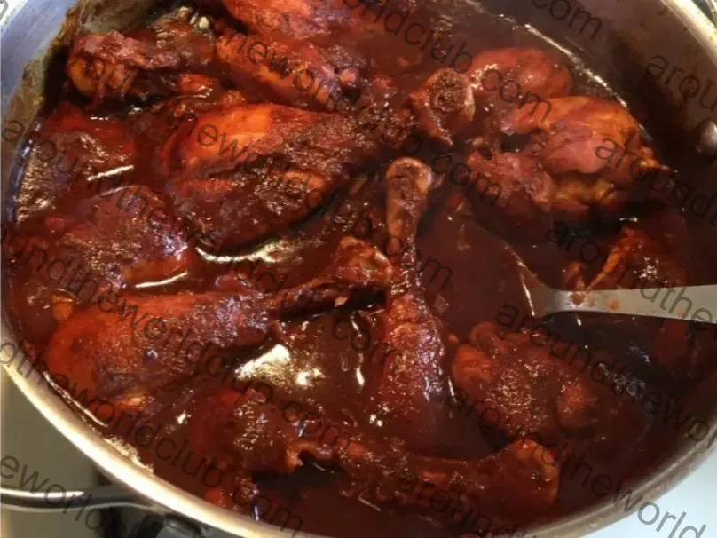

Chicken Adobo
The quintessential Filipino dish — chicken simmered in soy sauce, vinegar, garlic, and bay leaves until tender and deeply flavored.
Prep15 min + marinate
Cook30 min
DifficultyEasy
Estimated CostModerate
Ingredients
- chicken
- soy sauce
- vinegar
- garlic
- onion
- bay leaves
- whole peppercorn
- cooking oil
- water
- salt
- pepper
Steps
- Marinate chicken in soy sauce and garlic for at least 1 hour.
- Pan-fry the marinated chicken 1–2 minutes per side to brown it.
- Pour the marinade into the pot, add water, bay leaves, and peppercorn. Boil.
- Simmer 20–25 minutes until chicken is tender.
- Add vinegar. Do not stir — let it boil first to mellow the sourness.
- Reduce sauce until it thickens. Serve with steamed rice.